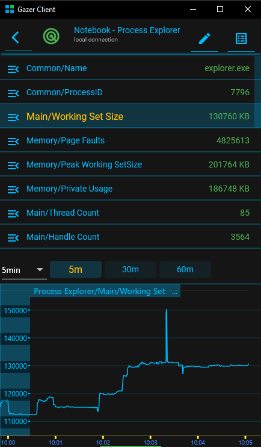
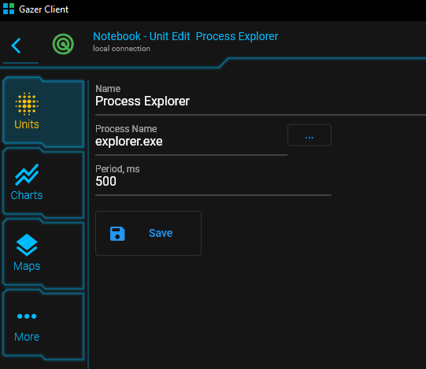

{#header.html#}
{%title=Gazer - Unit - Process%}
Process Unit
Description
The unit periodically gets information about the process and writes it to the corresponding data items.
Parameters
ProcessName
The name of the process to monitor. Example: explorer.exe
Period
The period between sensor activities
Data Items
The unit writes the measured parameters to the following data items:
Common/Name
Common/ProcessID
Main/Working Set Size
Main/Thread Count
Main/Handle Count
Main/GDI Objects
Main/GDI Objects Peak
Main/User Objects
Main/User Objects Peak
Operations/Read Operation Count
Operations/Read Transfer Count
Operations/Write Operation Count
Operations/Write Transfer Count
Operations/Other Operation Count
Operations/Other Transfer Count
CPU/Kernel Mode Time
CPU/User Mode Time
CPU/Usage
CPU/Usage Kernel
CPU/Usage User
Memory/Page Faults
Memory/Peak Working SetSize
Memory/Private Usage
Pictures
Screenshot

Configuration

{#bottom.html#}